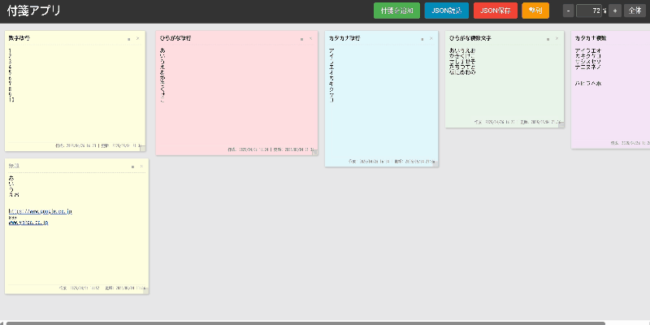

📝 付箋アプリ (Sticky Notes)
アイデアやタスクをデジタルな付箋に書き留め、自由に配置・整理できるシンプルなツールです。

主な特徴
- 自由な配置: ドラッグ＆ドロップで付箋を好きな場所に移動できます。
- リサイズ可能: 付箋の右下のハンドルでサイズを自由に変更できます。
- 色分け: 6色のカラーパレットから付箋の色を選べます。
- 自動整列: ボタン一つで、色ごとに付箋を整列させます。
- ズーム＆パン: ボード全体を拡大・縮小したり、ドラッグで表示範囲を移動できます。
- データ保存/読込: 作成した付箋データをJSONファイルとして保存・読み込みできます。
- URL自動リンク: 本文中のURLを自動でクリック可能なリンクに変換します。
使い方マニュアル
画面構成

- ヘッダー: アプリタイトルと各種操作ボタンがあります。
- 付箋を追加: 新しい付箋をボードに追加します。
- JSON読込: 保存したJSONファイルから付箋データを読み込みます。
- JSON保存: 現在の付箋データをJSONファイルとして保存します。
- 整列: 付箋を色別に自動で整列させます。
- ズームコントロール: 表示倍率の変更、全体表示を行います。
- ボード: 付箋を配置するメインエリアです。背景をドラッグすると表示範囲を移動（パン）できます。
- 付箋: 個々のメモです。タイトルと本文を編集できます。
基本的な使い方
- 付箋の追加: ヘッダーの付箋を追加ボタンをクリックします。新しい付箋がボードの左上に追加されます。
- テキストの編集: 付箋内のタイトル（太字部分）または本文をクリックすると編集モードになります。編集が終わったら、付箋外をクリックするかEnterキー（タイトル編集中は不可、本文編集中はShift+Enterで改行）を押します。
- 付箋の移動: 付箋の上部（タイトル部分など、テキスト編集エリアやボタン以外）をドラッグ＆ドロップします。
- 付箋のリサイズ: 付箋右下の四角いハンドルをドラッグします。
- 色の変更: 付箋右上の色アイコンをクリックするとカラーパレットが表示されます。好きな色をクリックして選択します。
- 付箋の削除: 付箋右上の×ボタンをクリックします。
- ボードの操作:
- パン: ボードの背景（付箋がない部分）をドラッグします。
- ズーム: ヘッダーの+/-ボタン、数値入力、またはCtrlキー（MacはCmd）を押しながらマウスホイールを操作します。
- 全体表示: ヘッダーの全体ボタンをクリックすると、全ての付箋が画面内に収まるように調整されます。
データの保存と読込
- 保存: ヘッダーのJSON保存ボタンをクリックすると、
FSN[日付時刻].jsonというファイル名でダウンロードが開始されます。 - 読込: ヘッダーのJSON読込ボタンをクリックし、保存したJSONファイルを選択します。現在のボード内容は上書きされます。
整列機能
ヘッダーの整列ボタンをクリックすると、付箋が色ごとに列にまとめられ、作成日時順に並べ替えられます。
